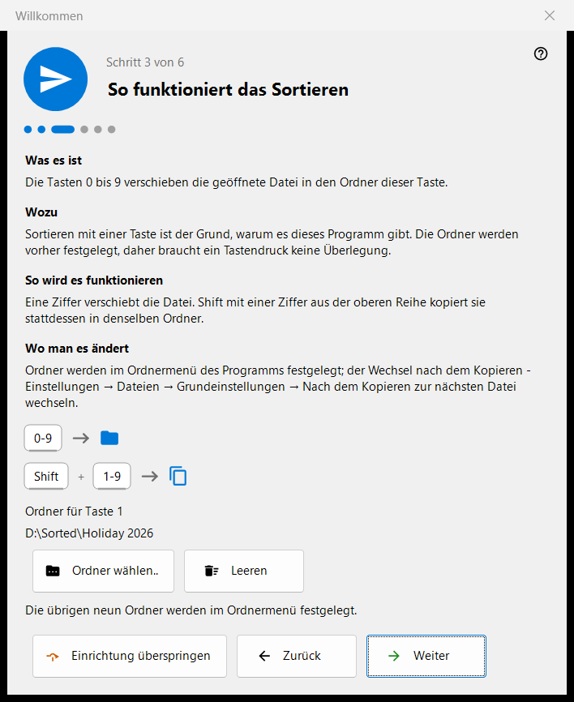
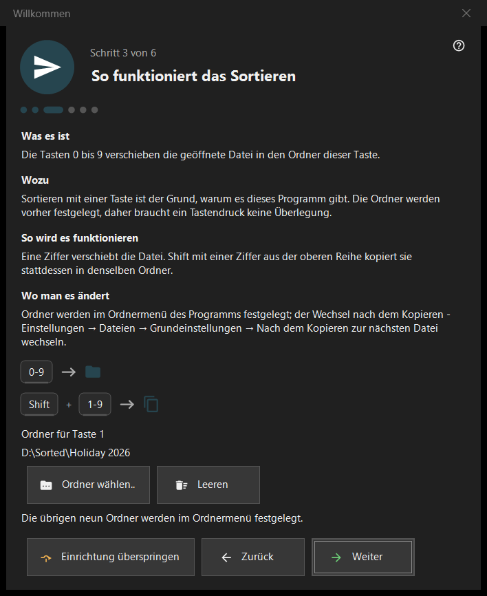

Willkommen
Willkommen
Verwendungszweck
Die Willkommensschritte richten in wenigen Minuten das Wichtigste ein: Sprache, Erscheinungsbild, den Ordner für die Taste 1, das Löschen und die Dateizuordnungen. Sie öffnen sich beim ersten Start, über die Schaltfläche «Ersteinrichtung» auf dem leeren Betrachterbildschirm und über «Die Willkommensschritte erneut anzeigen» auf der Seite «Allgemein» der Einstellungen. Es gibt sie nur in der 64-Bit-Version.


In dieser Reihenfolge
- Wählen Sie die Sprache.
- Wählen Sie das Hintergrundschema und die Aktion des Mausrads.
- Wählen Sie den Ordner für die Taste 1.
- Lesen Sie, wie das Löschen funktioniert.
- Legen Sie die Dateizuordnungen fest.
- Prüfen Sie die Zusammenfassung und drücken Sie «Fertig». Mit «Weiter» gehen Sie zum nächsten Schritt, mit «Zurück» zum vorherigen, mit «Einrichtung überspringen» direkt zum letzten Schritt.
Die Elemente
Sprache der Oberfläche
Das Fenster wechselt die Sprache sofort als Vorschau; der Betrachter übernimmt sie erst mit «Weiter». Wird das Fenster ohne «Weiter» geschlossen, wird die Sprache des Betrachters wiederhergestellt.
Erscheinungsbild
Wählen Sie das Hintergrundschema des Bildbereichs (Nach Ecke, Schwarz, Weiß, Nach Rand, Nach oben, Nach unten) und die Aktion des Mausrads: Entweder zoomt es am Mauszeiger und die Pfeiltasten blättern, oder es blättert und Ctrl+Mausrad zoomt. Beides lässt sich später auf der Seite «Bilder» der Einstellungen ändern.
So funktioniert das Sortieren
Die Ziffern 0-9 verschieben die aktuelle Datei in einen Ordner; Shift plus eine Ziffer der oberen Reihe kopiert sie. Den Ordner für die Taste 1 wählen Sie mit «Ordner wählen..»; die anderen neun werden später auf der Seite «Ziele» der Einstellungen festgelegt. Ist ein Ordner verschwunden, wird gemeldet: «Dieser Ordner ist nicht mehr verfügbar. Wählen Sie einen anderen.»
Sicheres Löschen
Zeigt, wie Del (Papierkorb) und Shift+Del (endgültig) funktionieren. Die Löschoptionen stehen auf der Seite «Dateien» der Einstellungen.
Bilder hier öffnen
Erlaubt diesem Programm, Bilder und Videos aus dem Explorer zu öffnen. Der Schritt erscheint nur, wenn das Programm nicht als Microsoft-Store-Paket installiert ist; er gilt für Ihr Benutzerkonto und braucht keine Administratorrechte.
Alles bereit
Die Zusammenfassung listet jede Einstellung mit ihrem Wert und dem Ort auf, an dem sie sich ändern lässt. Sind auf diesem PC Serverkomponenten installiert, zeigt der Block «Server auf diesem PC» jede mit ihrem Status und der Schaltfläche «Manager öffnen»; ist keine installiert, ist der Block ausgeblendet.
Teile eines Schritts
Jeder Schritt hat vier Teile: «Was es ist», «Wozu», «So wird es funktionieren» und «Wo man es ändert».